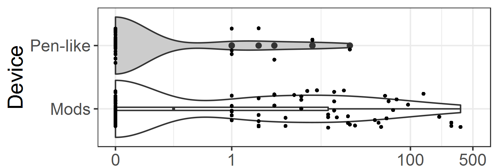

E-Cigarette Product Characteristics and Subsequent Frequency of Cigarette Smoking
Jessica L. Barrington-Trimis 1,*
@Doctor_BT
Zhi Yang 1
@zhiiiyang
Sara Schiff1 Jennifer Unger1 Tess Boley Cruz1 Robert Urman1 Junhan Cho1 Jonathan Samet2 Adam M. Leventhal1 Kiros Berhane1 Rob McConnell1
1 Department of Preventive Medicine, University of Southern California, Los Angeles, CA
2 Colorado School of Public Health, Aurora, CO
1 Introduction
Evidence that use of e-cigarettes with certain product characteristics may increase adolescent and young adult risk of unhealthy tobacco use patterns—such as frequency of combustible cigarette smoking—can inform regulation of e-cigarettes.
2 Methods
- Data were collected via online survey from participants in the Southern California Children’s Health Study in 2015-2016 (baseline) and 2016-2017 (follow-up) (N=1312).
- We evaluated the association of binary categories of three non-mutually exclusive characteristics of the e-cigarette used most frequently with number of cigarettes smoked in the past 30 days at 1-year follow-up.
- Product characteristics included
device(pen-like/mod [modifiable device]), use ofnicotinein eliquid solutions (yes/no), and use fordripping(directly dripping eliquid onto the device for high levels of nicotine; yes/no).
3 Results
Figure 3.1: The distribution of past-30-day cigarette use at follow-up for the (L) overall sample, and (R) sample of past 30-day e-cigarette users, by demographics.
| Total, N (%) | Mean number of cigarettes smoked at follow-up (SD) | RR (95% CI) | |
|---|---|---|---|
| Gender | |||
| Female | 685 (52.2) | 5.40 (82.0) | Ref |
| Male | 627 (47.8) | 7.11 (42.7) | 1.55 [1.10, 2.17] |
| Race/ethnicity | |||
| Non-Hispanic white | 171 (13.0) | 13.1 (156) | 1.00 [0.59, 1.70] |
| Hispanic white | 635 (48.4) | 3.79 (32.0) | 0.88 [0.51, 1.53] |
| Other | 506 (38.6) | 6.94 (43.7) | Ref |
| Education (highest parental) | |||
| 12th grade | 391 (29.8) | 1.95 (14.5) | Ref |
| Some college | 459 (35.0) | 8.24 (53.1) | 2.45 [1.53, 3.90] |
| College degree or higher | 386 (29.4) | 3.70 (24.3) | 2.38 [1.45, 3.88] |
| E-cigarette use | |||
| Never | 828 (63.1) | 1.86 (25.4) | Ref |
| Prior | 346 (26.4) | 13.0 (118) | 3.35 [2.16, 5.18] |
| Past 30-day | 138 (10.5) | 15.4 (51.6) | 5.84 [3.51, 9.71] |
The number of cigarettes smoked in the past 30 days at follow-up was higher for males (vs. females) and for those with parents who had some college or a college degree or
higher(vs. a high school degree or less).No differences were observed by ethnicity. Similar patterns emerged in the sample restricted to past 30-day e-cigarette users.
Participants who reported prior or past 30-day e-cigarette use at baseline reported a higher average number of cigarettes smoked in the past 30 days at follow-up.

Figure 3.2: The distribution of past-30-day cigarette use at follow-up by four e-cigarette characteristics of current e-cigarette at baseline.
- Adolescents using a pen-like device (N=36; 26.5% of past 30-day e-cigarette users) smoked on average very few cigarettes in the past 30 days at follow-up (mean number of cigarettes smoked [SD] = 1.3 [3.89]), compared to those using a mod device (N=100; 73.5%; mean number of cigarettes smoked at follow-up [SD]=20.8 [59.8]).
| Mean Number of Cigarettes Smoked at Follow-up (SD) | Model 1, RR (95% CI) | Model 2, RR (95% CI) | Model 3, RR (95% CI) | |
|---|---|---|---|---|
| No e-cigarette use (N=828) | 1.9 (25.4) | Ref | – | – |
| Device type | ||||
| Pen-like (N=36) | 1.3 (3.89) | 2.83 (1.27, 6.35) | Ref | Ref |
| Mods (N=100) | 20.8 (59.8) | 8.38 (4.87, 14.4) | 5.11 (1.74, 15.0) | 6.33 (1.64, 24.5) |
| Nicotine | ||||
| No (N=20) | 15.8 (64.0) | 3.90 (1.56, 9.74) | Ref | Ref |
| Yes (N=94) | 17.7 (54.7) | 6.52 (3.65, 11.6) | 3.69 (0.99, 13.7) | 1.65 (0.47, 5.71) |
| Dripping | ||||
| No (N=17) | 14.1 (36.2) | 4.64 (1.97, 10.9) | Ref | |
| Yes (N=109) | 17.1 (56.2) | 6.83 (3.98, 11.7) | 1.07 (0.35, 3.20) | |
Participants using a pen-like e-cigarette device smoked
2.83times (95%CI: 1.26, 6.35) as many cigarettes in the past 30 days at follow-up as those who had never used e-cigarettes, and participants using a mod device smoked 8.38 times (95%CI: 4.87, 14.4) as many cigarettes in the past 30 days at follow-up.In analyses restricted to participants reporting past 30 day use of e-cigarettes, adolescents using mods smoked an average of
5.11(95% CI: 1.74, 15.0) times as many cigarettes in the past 30 days at follow-up relative to adolescents using a pen-like e-cigarette device at baseline.
4 Conclusion
Use of mods (vs. pen-like) e-cigarette devices was strongly, positively associated with the number of cigarettes smoked approximately 1 year later at follow-up. Additional research is needed to explore causal pathways for the observed associations. If these associations were causal, device type and characteristics may be a target for regulation to reduce the burden of tobacco related disease that may result from adolescent and young adult vaping.
5 Disclosures
- This research study was supported by grant numbers P50CA180905 and U54CA180905 from the National Cancer Institute at the National Institutes of Health (NIH) and the Food and Drug Administration Center for Tobacco Products, grant number K01DA042950 from the National Institute for Drug Abuse at NIH, and grant 27-IR-0034 from the Tobacco Related Disease Research Program.
- The authors have no financial relationships relevant to this article to disclose.
- The authors have no conflicts of interest relevant to this article to disclose. Robert Urman began a position at Amgen on April 15, 2019 and did not contribute to the paper after that date.
6 References
Young adults using mod (vs. pen-like) e-cigarette devices at baseline smoked more than 6 times as many cigarettes in the past 30 days at follow-up.